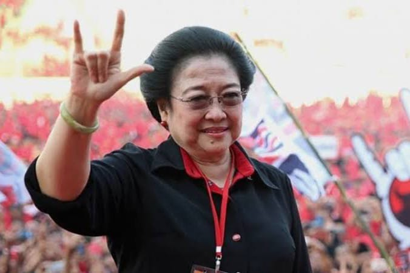

Diah Permata Megawati Setiawati Sukarnoputri (Indonesian: [meɡawati sukarnɔputri] ⓘ; born 23 January 1947) is an Indonesian politician who served as the fifth president of Indonesia (2001–2004) and the country's eighth vice president (1999–2001).
Megawati Sukarnoputri is Indonesia's first and to date only female president[4] and the fifth woman to lead a Muslim-majority country. She is also the first Indonesian president and as of 2023 the only vice president to be born after Indonesia proclaimed its independence in 1945. After serving as vice president to Abdurrahman Wahid, Megawati Sukarnoputri became president when Wahid was removed from office in 2001. She ran for re-election in the 2004 presidential election, but was defeated by Susilo Bambang Yudhoyono. She ran again in the 2009 presidential election, losing to Yudhoyono a second time.